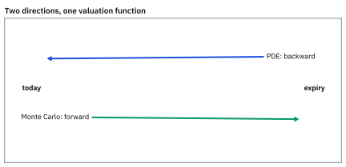
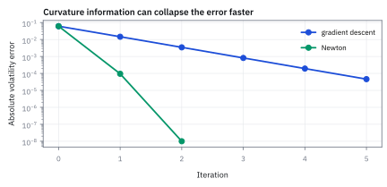

12.7 Algorithms in Practice — Gradient Descent and Newton's Method
gradient descent เดินสวนความชันด้วยขนาดก้าวที่ต้องเดาเอง ความโค้งเป็นตัวกำหนดว่าก้าวไหนเร็ว ก้าวไหนซิกแซก ก้าวไหนระเบิด ส่วน Newton ให้ความโค้งเลือกก้าวเอง
call บนกระดานราคา \$10.45 ต่อหุ้น (หุ้น \$100 strike \$100 อายุ 1 ปี ดอกเบี้ย 2%) ต้องหา implied volatility คือความผันผวนที่ทำให้สูตรราคาให้ \$10.45 พอดี ระบบเริ่มเดาที่ 30% แล้วใช้ gradient descent ขนาดก้าว $\eta=0.0005$ ซึ่งเข้าคำตอบใน 8 ก้าว เทรดเดอร์ใจร้อนเพิ่มเป็น $\eta=0.002$ หวังให้เร็วขึ้นสี่เท่า จะเกิดอะไรขึ้น
ลองตอบก่อนเปิดเฉลย
ระเบิด ความผันผวนเดิน 30% → 11.5% → 49.2% → −25.7% ติดลบในก้าวที่สาม สูตรราคาใช้ไม่ได้อีกต่อไป ใกล้คำตอบ error ถูกคูณด้วย $1-\eta f''$ ทุกก้าว และความโค้ง $f''$ ของโจทย์นี้ราว 1,527 ขนาดก้าวจึงต้องไม่เกิน $2/1527\approx0.00131$ ส่วน Newton ไม่ต้องเดาขนาดก้าวเลย สองก้าวได้ 23.92363% คลาดแค่ $1.4\times10^{-10}$
ภาพรวมก่อนลงสูตร
หน้าก่อน ๆ ของบทนี้แก้ได้ด้วยสูตรปิด แต่งานจริงส่วนใหญ่ไม่มีสูตร เช่นการหา implied volatility หรือการ calibrate แบบจำลองให้ตรงราคาตลาด เครื่องต้องเดินเข้าหาคำตอบทีละก้าว วิธีหลักมีสองวิธี: gradient descent ใช้แค่ความชัน (gradient) ก้าวสวนทางที่ชันที่สุดด้วยขนาดก้าวคงที่ ส่วน Newton ใช้ความโค้งด้วย (Hessian) ประมาณพื้นรอบตัวด้วยพาราโบลาแล้วกระโดดไปก้นพาราโบลานั้น
รูปข้างล่างคือความต่างทั้งหมดในภาพเดียว บนชามรีของความเสี่ยงพอร์ต ทิศที่ชันที่สุดไม่ได้ชี้ไปก้นชาม มันชี้ข้ามหุบแคบ gradient descent จึงเดินซิกแซกไปมา แม้ใช้ขนาดก้าวที่ดีที่สุดแล้ว error ก็หดได้แค่เหลือ 72% ต่อก้าว ต้องใช้ราว 41 ก้าวเพื่อความแม่น $10^{-6}$ Newton ใช้ความโค้งดัดชามให้กลม แล้วถึงก้นในก้าวเดียว
หน้านี้จะเริ่มจากชามหนึ่งมิติเพื่อหาว่าก้าวไหนปลอดภัย ขยายเป็นสองมิติเพื่อเห็นการซิกแซก สร้าง Newton แล้วดูว่ามันพลาดตรงไหนบนพื้นที่ไม่ใช่ชาม จากนั้นใช้ทั้งสองวิธีหา implied volatility ทำให้มันพัง และจบที่รั้วกันพังที่ระบบจริงต้องมี
รูป — gradient descent ซิกแซกในหุบแคบ Newton ถึงก้นในก้าวเดียว
ศัพท์ที่ใช้ในหัวข้อนี้
- Gradient descent
- ก้าวสวนความชันด้วยขนาดก้าว $\eta$ ที่ผู้ใช้เลือก ใช้ได้กับโจทย์หลายตัวแปรมาก เพราะต้องการแค่ความชัน
- Step size (learning rate)
- ตัวคูณ $\eta$ ของความชันในแต่ละก้าว เล็กไปช้า ใหญ่ไปแกว่งหรือระเบิด ค่าที่ใช้ได้ขึ้นกับความโค้งและหน่วยของโจทย์
- Condition number
- อัตราส่วนความโค้งมากสุดต่อน้อยสุดของชาม $\kappa=\lambda_{\max}/\lambda_{\min}$ ใช้บอกว่าหุบแคบแค่ไหน และ gradient descent จะช้าเพราะซิกแซกแค่ไหน
- Newton's method
- ประมาณ function ด้วยพาราโบลาที่จุดปัจจุบันแล้วกระโดดไปจุดที่ความชันของพาราโบลาเป็นศูนย์ ใช้ความโค้งเลือกก้าวเอง เร็วมากเมื่อเริ่มใกล้คำตอบ
- Linear / quadratic convergence
- linear คือ error ถูกคูณด้วยตัวเลขคงที่ทุกก้าว quadratic คือ error ใหม่แปรตามกำลังสองของ error เดิม จำนวนหลักที่ถูกจึงเพิ่มเป็นเท่าตัวทุกก้าว
- Line search (backtracking)
- ลองก้าวยาวก่อน ถ้าค่าเป้าหมายลดไม่พอก็หั่นก้าวครึ่งแล้วลองใหม่ ใช้กันไม่ให้ก้าวที่ใหญ่เกินพาไประเบิด
- Implied volatility และ vega
- implied volatility คือความผันผวนที่ทำให้สูตรราคา option ให้ราคาเท่าตลาด vega คืออัตราเปลี่ยนของราคาต่อความผันผวน เป็นความชันของโจทย์หาราก และเป็นตัวหารของ Newton
สัญลักษณ์และหน่วย
| สัญลักษณ์ | ความหมาย | หน่วย |
|---|---|---|
| $a,\ h$ | น้ำหนักหุ้นบนเส้นลงเงินครบของหุ้นกับพันธบัตร และความโค้ง 0.076 ของ variance | สัดส่วน, (ต่อปี)² |
| $\eta,\ k$ | ขนาดก้าว และเลขก้าว | ขึ้นกับหน่วยของ $f$, นับ |
| $H,\ \lambda_{\max},\ \lambda_{\min}$ | Hessian และ eigenvalue มากสุดกับน้อยสุดของมัน | หน่วยของ $f$ ต่อ (หน่วยของ $x$)² |
| $S,\ K,\ T,\ r$ | ราคาหุ้น strike อายุ และดอกเบี้ยทบต่อเนื่อง | ดอลลาร์, ดอลลาร์, ปี, ต่อปี |
| $\sigma,\ \sigma^\star$ | ความผันผวนที่กำลังลอง และคำตอบ | ทศนิยมต่อปี |
| $C(\sigma),\ C_{\text{mkt}},\ \mathcal V$ | ราคา call จากสูตร ราคาตลาด และ vega $dC/d\sigma$ | ดอลลาร์ต่อหุ้น และดอลลาร์ต่อหน่วยความผันผวน |
| $f(\sigma)$ | loss $\tfrac12(C-C_{\text{mkt}})^2$ | ดอลลาร์² |
ขั้นที่ 1 — ชามหนึ่งมิติ: error ถูกคูณด้วย 1 − ηh และเพดาน 2/h
เริ่มจากโจทย์ที่รู้คำตอบ: variance ของพอร์ตหุ้นกับพันธบัตรที่ลงเงินครบ (หุ้น 20% พันธบัตร 10% correlation 0.30) เขียนตามน้ำหนักหุ้น $a$ ได้ $g(a)=0.038a^2-0.008a+0.01$ ต่ำสุดที่ $a^\star=2/19$ ความชันของกำลังสองเขียนเป็นความโค้งคูณระยะจากคำตอบได้พอดี จึงตาม error ได้ตรง ๆ
บรรทัดแรกคือ $0.076(a-0.105263)=0.076a-0.008$ ความชันของกำลังสองเป็นเส้นตรงที่ผ่านศูนย์ตรงคำตอบ บรรทัดที่สามลบ $a^\star$ ออกทั้งสองข้าง ได้ว่า error ใหม่คือ error เดิมคูณ $(1-\eta h)$ ทุกก้าว ไม่ว่าอยู่ตรงไหน ตัวคูณนี้ต้องมีขนาดน้อยกว่า 1 error จึงหด ถ้ามันติดลบ error เปลี่ยนเครื่องหมายทุกก้าว คือกระโดดข้ามคำตอบไปมา
สามขนาดก้าวให้สามพฤติกรรม: $\eta=10$ หดเหลือ 24% ทุกก้าว (1, 0.32, 0.157, 0.118, 0.108) $\eta=20$ ข้ามไปข้ามมาแต่ยังหดเหลือ 52% (1, −0.36, 0.347, −0.021, 0.171) $\eta=30$ ข้ามแล้วไกลกว่าเดิม 1.28 เท่าทุกก้าว (1, −1.04, 1.57, −1.77, 2.51) น้ำหนักหุ้นวิ่งไป −177% แล้ว 251% เพดาน 26.3 มาจากความโค้งล้วน ๆ ยิ่งชามแคบ ก้าวที่ปลอดภัยยิ่งเล็ก และ $\eta=1/h\approx13.2$ ทำให้ตัวคูณเป็นศูนย์ ถึงในก้าวเดียว
รูป — สามขนาดก้าวบนชามเดียวกัน: เข้าตรง เข้าแบบแกว่ง และระเบิด
ขั้นที่ 2 — สองมิติ: ชามรีทำให้เดินซิกแซก
เพิ่มหุ้นเทค (ความผันผวน 35% correlation กับหุ้นสหรัฐฯ 0.65 กับพันธบัตร 0.30) แล้วให้พันธบัตรเป็นส่วนที่เหลือ variance กลายเป็นชามสองมิติในน้ำหนักหุ้นสหรัฐฯกับหุ้นเทค $z=(a,\ t)$ ทำแบบเดียวกับขั้นที่แล้ว แต่ตอนนี้ความโค้งเป็น matrix $H$ แยก error ตาม eigenvector ของ $H$ (eigenvalue และ positive definiteness) แต่ละทิศหดด้วยตัวคูณของตัวเอง
$H$ มาจากการแทนพันธบัตรด้วย $1-a-t$ ใน $x^{\mathsf T}Vx$ แล้วหา derivative อันดับสอง eigenvalue ทั้งสองบวก ชามจึงโค้งขึ้นทุกทิศ แต่ทิศชัน (ส่วนใหญ่คือเพิ่มหุ้นเทค) โค้งกว่าทิศราบ (เพิ่มหุ้นสหรัฐฯลดหุ้นเทค) ราว 6 เท่า นี่คือ condition number $\kappa\approx6.06$
ปัญหาคือขนาดก้าวต้องเลือกเดียวสำหรับทุกทิศ ทิศชันบังคับให้ $\eta$ ต่ำกว่า 7.79 ไม่งั้นระเบิด แต่ที่ $\eta$ ระดับนั้น ทิศราบหดได้แค่ $1-7\times0.0423\approx0.70$ ต่อก้าว ค่าที่ดีที่สุดคือทำให้สองทิศหดเท่ากัน ได้ 0.717 ต่อก้าว ต้องใช้ $\ln(10^{-6})/\ln(0.717)\approx41.5$ ก้าวเพื่อลด error ล้านเท่า ในรูปภาพรวม ทิศทางของก้าวคือตั้งฉากกับวงรี ซึ่งชี้ข้ามหุบมากกว่าชี้ไปก้น ก้าวจึงเด้งไปมาระหว่างสองผนังหุบ ถ้า $\kappa$ เป็น 1,000 (ซึ่งเจอบ่อยกับ parameter ต่างหน่วยกัน) ตัวคูณจะเป็น 0.998 และต้องใช้เกือบ 7,000 ก้าว
ขั้นที่ 3 — Newton: กระโดดไปก้นพาราโบลาที่ประมาณไว้
แทนที่จะเดาขนาดก้าว Newton ประมาณ function รอบจุดปัจจุบันด้วย Taylor อันดับสอง (Hessian และเงื่อนไขอันดับสอง) แล้วหาจุดที่ความชันของพาราโบลานั้นเป็นศูนย์
ก้าวของ Newton คือ gradient descent ที่เอา $\eta$ ตัวเลขเดียวออก แล้วใส่ $H^{-1}$ ทั้ง matrix แทน ตัวคูณของ error $(I-\eta H)$ กลายเป็น $(I-H^{-1}H)=0$ ในทุกทิศพร้อมกัน บนกำลังสองล้วน พาราโบลาที่ประมาณคือ function จริงเป๊ะ Newton จึงถึงก้นในก้าวเดียวทั้งแบบหนึ่งมิติและสองมิติ ตรงกับ $z^\star=(17.14\%,\ -6.44\%)$ ซึ่งคือพอร์ตความเสี่ยงต่ำสุดที่ยอมให้ short หุ้นเทค
บรรทัด 2-D แก้ $Hp=-\nabla f$ ด้วยกฎกลับ 2×2: $\det H=0.076(0.223)-0.078^2=0.010864$ ราคาของความเร็วนี้คือต้องมี $H$ และต้องแก้ระบบเชิงเส้นทุกก้าว พอร์ต 500 หุ้นมี Hessian 250,000 ช่อง
ขั้นที่ 4 — Newton บนพื้นที่ไม่ใช่ชาม: เร็ว แต่แยกก้นหลุมกับอานม้าไม่ออก
ถ้า function ไม่ใช่กำลังสอง พาราโบลาเป็นแค่ค่าประมาณ Newton จึงต้องเดินหลายก้าว ใช้ตัวอย่างเล็ก ๆ ที่รู้คำตอบ: $f=x_1^2+3x_1x_2+x_2^3$ ความชันเป็นศูนย์ที่สองจุด และ Hessian บอกว่าแต่ละจุดเป็นอะไร
นี่คือพื้นผิวทดสอบเดียวกับที่หน้า Hessianใช้แยกอานม้ากับก้นหลุม จากจุดเริ่ม P ระยะถึงก้นหลุมเป็น 0.75, 0.15, 0.0088, 0.00003 ทุกก้าวคือกำลังสองของก้าวก่อนคูณค่าคงที่ จำนวนหลักที่ถูกเพิ่มเป็นเท่าตัว (quadratic convergence) แต่ก้าวแรกพาไปที่ $(-3,\ 2)$ ซึ่ง $f=-1.00$ สูงกว่าจุดเริ่ม $-1.25$ เพราะพาราโบลาที่ประมาณไว้ไกลจากของจริงเมื่อก้าวยาว Newton เปล่า ๆ จึงไม่รับประกันว่าค่าลดทุกก้าว
จากจุดเริ่ม Q Newton เข้าหาอานม้า $(0,\ 0)$ ซึ่ง $f=0$ สูงกว่าจุดเริ่มที่ $f=-0.375$ ที่ Q $H=\begin{bmatrix}2&3\\3&3\end{bmatrix}$ มี determinant $-3$ ไม่บวกแน่นอน ทิศของ Newton $p=(1.25,\ -1)$ ให้ $\nabla f^{\mathsf T}p=0.5(1.25)+(-0.75)(-1)=+1.375\gt0$ คือทิศขึ้นเขา Newton หาจุดที่ความชันเป็นศูนย์ ไม่สนว่าเป็นก้นหลุม ยอดเขา หรืออานม้า และนี่คือเหตุที่ต้องตรวจ Hessian ก่อนเชื่อคำตอบ (global กับ local minimum) ทางแก้ที่ใช้จริงคือยอมรับก้าวของ Newton เฉพาะเมื่อมันเป็นทิศลงเขา ถ้าไม่ใช่ให้ถอยไปใช้ทิศของ gradient และใส่ line search ทุกครั้ง
รูป — Newton จากสองจุดเริ่ม: จุดหนึ่งลงหลุม อีกจุดขึ้นไปหาอานม้า
ขั้นที่ 5 — implied volatility: เปลี่ยนราคาเป็นรากและเป็น loss
“หาความผันผวนที่ทำให้ราคาตรงตลาด” เขียนได้สองแบบ: หารากของส่วนต่างราคา หรือหาจุดต่ำสุดของส่วนต่างยกกำลังสองหารสอง หา derivative ของ loss ด้วย chain rule เพื่อเชื่อมสองแบบเข้าด้วยกัน
บรรทัดของ $f''$ คือกฎผลคูณของ $g\mathcal V$ ที่คำตอบ $g=0$ พจน์ที่สองหาย ความโค้งจึงเป็น vega² เป๊ะ ใกล้คำตอบ ก้าวของ Newton บน loss จึงเกือบเท่า $-g/\mathcal V$ ซึ่งคือ Newton สำหรับหาราก: ตามเส้นสัมผัสของราคาไปจนตัดราคาตลาด
สูตรราคาและ vega มาจากสูตร Black–Scholes และthe Greeks หน้านี้ใช้เป็นกล่องที่คำนวณได้ ไม่ได้พิสูจน์ ($\Phi$ และ $\phi$ คือ CDF และ density ของstandard Normal) แล้วคำนวณที่จุดเริ่ม 30% ซึ่ง $S=K$ ทำให้ $\ln(S/K)=0$
ที่ 30% สูตรให้ราคาสูงกว่าตลาด \$2.37 จึงต้องลดความผันผวน vega 38.97 แปลว่าความผันผวนขยับ 1 จุด (0.01) ราคาขยับราว \$0.39 ส่วน $Ke^{-rT}=100e^{-0.02}=98.0199$ และ $\phi(0.216667)=e^{-0.216667^2/2}/\sqrt{2\pi}=0.389687$ คือความสูงของเส้นระฆัง ไม่ใช่พื้นที่
รูป — implied volatility คือจุดที่เส้นราคาตัดราคาตลาด

ขั้นที่ 6 — gradient descent ที่ η = 0.0005: error หดเหลือ 23.6% ทุกก้าว
โจทย์ให้อะไรมาบ้าง: ก้าวแรก $\sigma_1=0.30-0.0005(92.4175)=0.253791$ ทำซ้ำด้วยกฎเดิม คำตอบจริง (หาด้วย bisection จนแคบกว่า $10^{-15}$) คือ $\sigma^\star=0.2392363$
| $k$ | $\sigma_k$ | $C(\sigma_k)$ | ส่วนต่าง | $f'$ | vega |
|---|---|---|---|---|---|
| 0 | 0.300000 | 12.821581 | +2.371581 | +92.4175 | 38.9687 |
| 1 | 0.253791 | 11.018652 | +0.568652 | +22.2110 | 39.0591 |
| 2 | 0.242686 | 10.584792 | +0.134792 | +5.2669 | 39.0746 |
| 3 | 0.240052 | 10.481886 | +0.031886 | +1.2460 | 39.0779 |
| 4 | 0.239429 | 10.457539 | +0.007539 | +0.2946 | 39.0787 |
| 5 | 0.239282 | 10.451783 | +0.001783 | +0.0697 | 39.0789 |
| 6 | 0.239247 | 10.450421 | +0.000421 | +0.0165 | 39.0789 |
คำตอบ: error หดเหลือราว 23.6% ทุกก้าว ตรงกับตัวคูณ $1-\eta f''$ ของชามหนึ่งมิติ โดย $f''$ คือ vega² ต้องใช้ 8 ก้าวจึงคลาดไม่เกิน $10^{-6}$ (0.0001 จุดของความผันผวน) vega แทบไม่เปลี่ยนตลอดทาง (38.97 ถึง 39.08) โจทย์นี้จึงทำตัวเหมือนชามกำลังสอง
ตรวจเองใน 10 วินาที: แถว 1: ส่วนต่าง 0.568652 คูณ vega 39.0591 ได้ 22.2110 คูณ 0.0005 ได้ 0.011106 จึงไป 0.242686 ค่า $\eta=0.0005$ ดูเล็กเพราะความชันใหญ่ (92) ขณะที่ระยะที่ต้องเดินแค่ 0.06 ตัวเลข $\eta$ จึงไม่มีความหมายถ้าไม่บอกหน่วยของ $f$
ขั้นที่ 7 — Newton: หลักที่ถูกเพิ่มเป็นเท่าตัว
ใช้ Newton สำหรับหาราก $\sigma_{k+1}=\sigma_k-g(\sigma_k)/\mathcal V(\sigma_k)$ แล้ววัด error ทุกก้าว
หลักที่ถูกเพิ่มจาก 1 เป็น 4 เป็น 9 นี่คือ quadratic convergence: เส้นสัมผัสพลาดเพราะพจน์อันดับสองของ Taylor ที่ทิ้งไป error ที่เหลือจึงแปรตามกำลังสองของ error เดิม gradient descent ใช้ 8 ก้าวเพื่อ $10^{-6}$ Newton ใช้ 2 ก้าวได้ $10^{-10}$
ก้าวแรกของ Newton คือ gradient descent ที่ $\eta=1/\mathcal V(0.30)^2=1/1518.56=0.000659$ พอดี: $0.000659\times92.4175=0.060859$ ค่า 0.0005 ที่เราเดาจึงเล็กกว่าค่าที่พอดี 24% Newton ให้ความโค้งเลือก $\eta$ ใหม่ทุกก้าว ไม่ต้องจูน
รูป — error ของสองวิธีบนสเกล log

ขั้นที่ 8 — ทำให้มันพัง: η = 0.0013 แกว่ง η = 0.002 ระเบิด แล้วซ่อมด้วย line search
ใช้เพดาน $2/h$ ของชามหนึ่งมิติ โดยความโค้งคือ vega² ที่คำตอบ ได้ขนาดก้าวที่ใหญ่ที่สุดที่ยังลู่เข้า แล้วลองสองค่ารอบเพดานนั้น
$\eta=0.0013$ อยู่ใต้เพดานนิดเดียว ตัวคูณคือ $1-1.985=-0.985$ กระโดดข้ามคำตอบไปมาและหดช้ามาก $\eta=0.002$ เกินเพดาน ตัวคูณ −2.05 ทุกก้าวกระโดดไกลขึ้น ความชันพุ่งจาก 92 เป็น −188 เป็น 374 ภายในสามก้าว σ ติดลบ แล้ว $\sigma\sqrt T$ ติดลบทำให้ $d_1$ ไร้ความหมาย โค้ดท้ายหน้าหยุดและรายงานว่าหลุดโดเมนที่ก้าวที่ 3 สรุปตามขนาดก้าว: ต่ำกว่า 0.000655 ($=1/f''$) เดินสั้น ปลอดภัยแต่ช้า ใกล้ 0.000655 เร็วที่สุด ระหว่างนั้นถึง 0.00131 ยิงเลยแล้วเด้งกลับแต่ยังเข้า เกิน 0.00131 ระเบิด
ทางซ่อมมาตรฐานคือไม่เชื่อก้าวแรกที่เสนอ: backtracking line search ยอมรับก้าว $\eta$ เมื่อ $f(\sigma-\eta f')\le f(\sigma)-\tfrac12\eta f'^2$ ไม่งั้นหั่น $\eta$ ครึ่งแล้วลองใหม่ เริ่มที่ 0.002: loss ที่ก้าวนั้นพุ่งจาก 2.81 เป็น 11.74 ถูกปฏิเสธ หั่นเป็น 0.001 ยังลดไม่พอตามเกณฑ์ หั่นอีกเป็น 0.0005 ผ่าน และทุกก้าวต่อจากนั้นจบที่ 0.0005 เอง ได้เส้นทางเดียวกับตาราง gradient descent ที่ $\eta=0.0005$ ข้างบน โดยไม่มีใครต้องจูน
ขั้นที่ 9 — รั้วกันพังก่อนเชื่อคำตอบ
ก่อนเดินต้องรู้ว่ามีคำตอบไหม และระหว่างเดินต้องไม่หารด้วยเลขที่ใกล้ศูนย์ ขอบของราคา call คือเมื่อความผันผวนเข้าใกล้ศูนย์และเมื่อโตไม่หยุด
ราคาตลาดต้องอยู่ระหว่างสองขอบ ถ้าต่ำกว่า 1.98 จะไม่มีความผันผวนไหนให้ราคานั้น โปรแกรมต้องตอบว่าราคาผิด ไม่ใช่วนหาไปเรื่อย ๆ และเพราะ vega เป็นบวกตลอด คำตอบมีหนึ่งเดียว bisection ที่ผ่าครึ่งช่วง 1% ถึง 100% จึงรับประกันว่าเจอ แต่ใช้ 20 ก้าวเพื่อความแม่น $10^{-6}$ เพราะช่วงหดแค่ครึ่งต่อก้าว
กับดักของ Newton คือ vega เกือบศูนย์ call ที่ strike 160 ราคา \$0.4443 (ความผันผวนจริง 25%) ถ้าเริ่มเดาที่ 5% vega เหลือ $1.3\times10^{-16}$ ก้าวของ Newton ยาวราว $3.45\times10^{15}$ โค้ดท้ายหน้าปฏิเสธก้าวนี้ ถ้าเริ่มที่ 60% แทน Newton เดิน 0.346, 0.275, 0.253, 0.2501 แล้วถึง 0.25 ใน 6 ก้าว ระบบจริงจึงผสมสองวิธี: ใช้ Newton เมื่อก้าวยังอยู่ในช่วงคร่อมคำตอบ และถอยไป bisection เมื่อก้าวหลุดช่วง
กับดัก: ยก η จากโจทย์หนึ่งไปอีกโจทย์ หยุดผิดเวลา และเชื่อ Newton โดยไม่ดู Hessian
$\eta=0.0005$ ใช้ได้เพราะความโค้งราว 1,527 ถ้าหุ้นราคา 1,000 แทน 100 (strike 1,000 ด้วย) vega โตสิบเท่า ความโค้งโตร้อยเท่าเป็นราว 152,700 เพดาน $2/f''$ เหลือ $1.3\times10^{-5}$ ค่า 0.0005 เดิมเกินเพดาน 38 เท่า ระเบิดทันที ต้องคำนวณเพดานใหม่ทุกโจทย์ หรือใช้ line search ที่ปรับก้าวเอง
อย่าหยุดเพราะก้าวสั้นอย่างเดียว gradient descent ที่ $\eta$ เล็กมากก้าวสั้นตลอดทั้งที่ยังไกลคำตอบ ให้ตรวจส่วนต่างราคาด้วย เช่น $|C(\sigma)-10.45|\lt0.0001$ และในหลายมิติ ก้าวที่สั้นลงอาจแค่แปลว่ากำลังคลานในทิศราบของหุบแคบ ($\kappa=6$ ก็ต้อง 41 ก้าวแล้ว)
Newton ที่ลู่เข้าเร็วไม่ได้แปลว่าเจอจุดต่ำ จาก Q บนพื้นที่ $x_1^2+3x_1x_2+x_2^3$ มันลู่เข้าอานม้าภายใน 5 ก้าวด้วยความเร็วแบบกำลังสองเหมือนกัน ตรวจ Hessian ที่คำตอบทุกครั้ง: $(0,\ 0)$ มี determinant −9 ไม่ใช่ก้น
ใช้ทำอะไรบนโต๊ะจริง
หน้าจอ option แปลงราคาเป็น implied volatility หลายพันครั้งต่อวินาทีด้วย Newton ที่มีรั้ว: เริ่มจากค่าเดาที่สมเหตุสมผล ตรวจขอบ arbitrage ก่อน จำกัด σ ไว้ในช่วง และถ้าก้าวของ Newton ออกนอกช่วงคร่อมก็ถอยไปใช้ bisection วิธีมาตรฐานอย่าง Brent's method คือการผสม bisection กับการประมาณด้วยเส้นโค้งแบบนี้
การ calibrate แบบจำลองหลาย parameter เช่น stochastic volatility ห้าตัว (optimizer หลายตัวแปรสำหรับ calibration) มีตัวเลือกสามแบบ: grid search ลองทุกจุดบนตาราง รับประกันว่าเจอจุดที่ดีที่สุดบนตาราง แต่ถ้าแบ่ง 10 ค่าต่อ parameter ก็ต้องคำนวณราคา 100,000 ครั้ง Nelder–Mead ไม่ใช้ความชันเลย และ BFGS ซึ่งเป็น quasi-Newton: สร้างค่าประมาณของ Hessian จากความชันที่เปลี่ยนไประหว่างก้าว จึงได้ความเร็วใกล้ Newton โดยไม่ต้องคำนวณ Hessian ในตัวอย่างหนึ่งที่เริ่มจาก RMSE 0.866 grid search ลงมาได้ 0.367 ส่วน BFGS ได้ 0.266 ด้วยชุด parameter ที่ต่างกันมาก ซึ่งบอกว่าพื้นผิว error มีหลายหลุม BFGS เร็วเมื่อพื้นผิวเป็นชาม แต่ติดอานม้าได้ ต้องการ function เรียบ และไม่รับประกันหลุมที่ลึกที่สุด (global กับ local minimum) งาน machine learning ที่มี parameter เป็นล้านใช้ gradient descent ที่ปรับก้าวเอง เพราะ Hessian ใหญ่เกินจะเก็บ
โจทย์ตรวจความเข้าใจ
1. บนชามหนึ่งมิติ $g(a)=0.038a^2-0.008a+0.01$ ขนาดก้าวคงที่ค่าไหนเร็วที่สุด และถ้าใช้ $\eta=20$ เริ่มที่ 1 หลังสี่ก้าวห่างคำตอบเท่าไร
เฉลย
เร็วที่สุดเมื่อตัวคูณเป็นศูนย์: $\eta=1/h=1/0.076\approx13.16$ ถึงในก้าวเดียว ซึ่งคือ Newton ที่ $\eta=20$ ตัวคูณ −0.52 error เริ่มต้น $1-2/19=0.894737$ หลังสี่ก้าว $0.52^4\times0.894737\approx0.06542$ ตรงกับ $a_4=0.170683$ ลบ 0.105263
2. ถ้าราคาตลาดของ call เดียวกันเป็น \$8.00 ใช้ Newton จาก 30% หา implied volatility
เฉลย
ขอบ 1.98 ถึง 100 ผ่าน ก้าวแรก $0.30-(12.821581-8)/38.9687=0.30-0.12373=0.176270$ ก้าวที่สอง 0.176572 ก้าวที่สามเปลี่ยนแค่หลักที่ 9 คำตอบ 17.6572% ก้าวแรกยาวกว่าโจทย์ในหน้าเพราะส่วนต่างราคาใหญ่กว่าสองเท่า
3. ถ้าวัดราคาเป็นเซนต์แทนดอลลาร์ เพดานขนาดก้าวของ gradient descent และก้าวของ Newton เปลี่ยนอย่างไร
เฉลย
loss $\tfrac12g^2$ โต $100^2=10{,}000$ เท่า ความโค้งจึงโต 10,000 เท่า เพดาน $2/f''$ เหลือ $0.00131/10{,}000\approx1.31\times10^{-7}$ ส่วน Newton ใช้ $g/\mathcal V$ ซึ่งทั้งเศษและส่วนโต 100 เท่า ก้าวจึงเท่าเดิม นี่คือเหตุผลที่ Newton ไม่ต้องจูน และเหตุผลที่ gradient descent ไวต่อการเลือกหน่วยมาก
คำนวณซ้ำด้วย JavaScript
เปิดดูโค้ด
const phi = x => Math.exp(-x * x / 2) / Math.sqrt(2 * Math.PI);
// Standard Normal CDF by Simpson's rule on [0, |x|]; enough intervals for 1e-12 accuracy here.
function Phi(x) {
if (!Number.isFinite(x)) throw new RangeError('Phi needs a finite argument');
const n = 2 * Math.ceil(500 * Math.max(1, Math.abs(x))), h = Math.abs(x) / n;
let sum = 0;
for (let i = 0; i <= n; i++) sum += (i === 0 || i === n ? 1 : i % 2 ? 4 : 2) * phi(i * h);
const half = sum * h / 3;
return Math.min(1, Math.max(0, x >= 0 ? 0.5 + half : 0.5 - half));
}
// Black-Scholes call and vega, taken as given here.
function bs(sigma, {S = 100, K = 100, r = 0.02, T = 1} = {}) {
if (!(Number.isFinite(sigma) && sigma > 0)) throw new RangeError('Volatility must be positive');
const d1 = (Math.log(S / K) + (r + sigma * sigma / 2) * T) / (sigma * Math.sqrt(T)), d2 = d1 - sigma * Math.sqrt(T);
return {d1, d2, price: S * Phi(d1) - K * Math.exp(-r * T) * Phi(d2), vega: S * phi(d1) * Math.sqrt(T)};
}
function checkQuote(quote, opts = {}) {
const {S = 100, K = 100, r = 0.02, T = 1} = opts, low = Math.max(S - K * Math.exp(-r * T), 0);
if (!(quote > low && quote < S)) throw new RangeError(`Price outside no-arbitrage bounds (${low.toFixed(6)}, ${S})`);
return low;
}
const loss = (s, quote, opts) => 0.5 * (bs(s, opts).price - quote) ** 2;
// Gradient descent on f = (C - quote)^2 / 2; optional backtracking halves eta until f drops enough.
function descend(quote, sigma0, eta, steps, {backtrack = false, ...opts} = {}) {
checkQuote(quote, opts);
const path = [sigma0], etas = [];
for (let k = 0; k < steps; k++) {
const s = path[k], {price, vega} = bs(s, opts), g = (price - quote) * vega;
let step = eta;
if (backtrack) while (!(s - step * g > 0 && loss(s - step * g, quote, opts) <= loss(s, quote, opts) - 0.5 * step * g * g)) step /= 2;
const next = s - step * g;
path.push(next); etas.push(step);
if (!(next > 0)) return {path, etas, leftDomainAt: k + 1};
}
return {path, etas, leftDomainAt: null};
}
function newton(quote, sigma0, steps, opts = {}) {
checkQuote(quote, opts);
const path = [sigma0];
for (let k = 0; k < steps; k++) {
const {price, vega} = bs(path[k], opts);
if (vega < 1e-8 * (opts.S ?? 100)) throw new RangeError(`Vega too small at sigma = ${path[k]}: Newton step unsafe, bracket first`);
path.push(path[k] - (price - quote) / vega);
}
return path;
}
function bisect(quote, lo, hi, tol, opts = {}) {
checkQuote(quote, opts);
let steps = 0;
while (hi - lo > tol) { const mid = (lo + hi) / 2; if (bs(mid, opts).price > quote) hi = mid; else lo = mid; steps++; }
return {root: (lo + hi) / 2, steps};
}
// Two-dimensional bowl: H = Hessian of portfolio variance over (stock, tech) weights, bonds take the rest.
const H = [[0.076, 0.078], [0.078, 0.223]];
const tr = H[0][0] + H[1][1], det = H[0][0] * H[1][1] - H[0][1] ** 2, gap = Math.sqrt(tr * tr / 4 - det);
const lamMax = tr / 2 + gap, lamMin = tr / 2 - gap, kappa = lamMax / lamMin, best = (kappa - 1) / (kappa + 1);
const zStar = [0.1713918, -0.0644330], z0 = [0.50, -0.15];
const grad0 = H.map(r => r[0] * (z0[0] - zStar[0]) + r[1] * (z0[1] - zStar[1]));
const newtonStep2d = [-(H[1][1] * grad0[0] - H[0][1] * grad0[1]) / det, -(-H[1][0] * grad0[0] + H[0][0] * grad0[1]) / det];
// Non-quadratic test function f = x1^2 + 3 x1 x2 + x2^3: Newton finds stationary points, minimum or saddle.
function newton2(x, steps) {
const path = [x];
for (let k = 0; k < steps; k++) {
const [a, b] = path[k], g = [2 * a + 3 * b, 3 * a + 3 * b * b], d = 2 * 6 * b - 9;
path.push([a - (6 * b * g[0] - 3 * g[1]) / d, b - (-3 * g[0] + 2 * g[1]) / d]);
}
return path;
}
const cubic = ([a, b]) => a * a + 3 * a * b + b ** 3;
const quote = 10.45, start = bs(0.30), root = bisect(quote, 0.01, 1, 1e-15).root, curvature = bs(root).vega ** 2;
const gd = descend(quote, 0.30, 0.0005, 40), nt = newton(quote, 0.30, 3);
let stepsTo1e6 = 0;
while (Math.abs(gd.path[stepsTo1e6] - root) >= 1e-6) stepsTo1e6++;
const quad = eta => { const p = [1]; for (let k = 0; k < 4; k++) p.push(p[k] - eta * (0.076 * p[k] - 0.008)); return p; };
const otm = {K: 160}, otmQuote = bs(0.25, otm).price;
let otmRefusal = null;
try { newton(otmQuote, 0.05, 3, otm); } catch (error) { otmRefusal = error.message; }
console.log(JSON.stringify({
oneD: {eta10: quad(10), eta20: quad(20), eta30: quad(30), ceiling: 2 / 0.076, newton: 1 - (0.076 - 0.008) / 0.076},
twoD: {lamMax, lamMin, kappa, etaMax: 2 / lamMax, etaBest: 2 / (lamMax + lamMin), factor: best, stepsTo1e6: Math.log(1e-6) / Math.log(best),
grad0, newtonStep2d, landsAt: [z0[0] + newtonStep2d[0], z0[1] + newtonStep2d[1]]},
cubic: {fromA: newton2([-1.5, 1.0], 5), fA: newton2([-1.5, 1.0], 5).map(cubic), fromB: newton2([-0.5, 0.5], 5), fB: newton2([-0.5, 0.5], 5).map(cubic),
slopeAlongStepB: 0.5 * 1.25 + (-0.75) * (-1)},
start: {...start, gap: start.price - quote, slope: (start.price - quote) * start.vega, loss: loss(0.30, quote)},
root, vegaAtRoot: bs(root).vega, curvature, factor: 1 - 0.0005 * curvature, etaMax: 2 / curvature, etaNewton: 1 / start.vega ** 2,
gdTable: gd.path.slice(0, 7).map(s => { const b = bs(s); return [s, b.price, b.price - quote, (b.price - quote) * b.vega, b.vega]; }),
ratios: [1, 2, 3, 4, 5].map(k => (gd.path[k] - root) / (gd.path[k - 1] - root)), stepsTo1e6,
newton: nt, newtonErrors: nt.map(s => s - root),
oscillate: descend(quote, 0.30, 0.0013, 6).path, blowUp: descend(quote, 0.30, 0.002, 6),
backtracking: {...descend(quote, 0.30, 0.002, 6, {backtrack: true}), lossAt0002: loss(0.30 - 0.002 * (start.price - quote) * start.vega, quote)},
bounds: [checkQuote(quote), 100], bisection: bisect(quote, 0.01, 1, 1e-6),
otm: {quote: otmQuote, vegaAt5: bs(0.05, otm).vega, refusal: otmRefusal, fromSixty: newton(otmQuote, 0.60, 6, otm)},
exercises: {quote8: newton(8, 0.30, 5), centsEtaMax: 2 / (curvature * 1e4)}
}));สิ่งที่ควรตอบได้หลังอ่าน
- ใกล้คำตอบ gradient descent คูณ error ด้วย $1-\eta f''$ ทุกก้าว: ชามหนึ่งมิติที่ $\eta=10$ ได้ 0.24 implied volatility ที่ $\eta=0.0005$ ได้ 0.2364 และขนาดก้าวต้องต่ำกว่า $2/f''$ (26.3 และ 0.00131) ไม่งั้นระเบิด
- ในหลายมิติ ขนาดก้าวถูกจำกัดด้วยทิศที่โค้งที่สุด แต่ความเร็วถูกกำหนดด้วยทิศที่ราบที่สุด: ชามความเสี่ยงที่ $\kappa=6.06$ หดได้ดีที่สุด 0.717 ต่อก้าว ต้องราว 41 ก้าว
- Newton คือ $p=-H^{-1}\nabla f$ ถึงในก้าวเดียวบนกำลังสอง และได้หลักเพิ่มเป็นเท่าตัวบนโจทย์ทั่วไป: 23.92363% ใน 2 ก้าว
- Newton หาจุดที่ความชันเป็นศูนย์ ไม่ใช่จุดต่ำ: จาก $(-0.5,\ 0.5)$ มันวิ่งเข้าอานม้า ต้องตรวจว่าก้าวเป็นทิศลงเขาและ Hessian ที่คำตอบบวกแน่นอน
- ระบบจริงต้องมีรั้ว: ตรวจขอบ arbitrage (1.98 ถึง 100) ห้ามหารด้วย vega ใกล้ศูนย์ ใช้ line search ซึ่งหั่น 0.002 ลงเป็น 0.0005 เอง และมี bisection สำรอง
หน้าถัดไป mean-variance ที่มีต้นทุนการเทรด กลับมาที่พอร์ต แล้วเพิ่มสิ่งที่ทุกหน้าก่อนหน้านี้ละไว้: การย้ายพอร์ตมีต้นทุน และต้นทุนแบบคิดเป็นสัดส่วนของการซื้อขายทำให้บางครั้งคำตอบที่ดีที่สุดคือไม่เทรดเลย